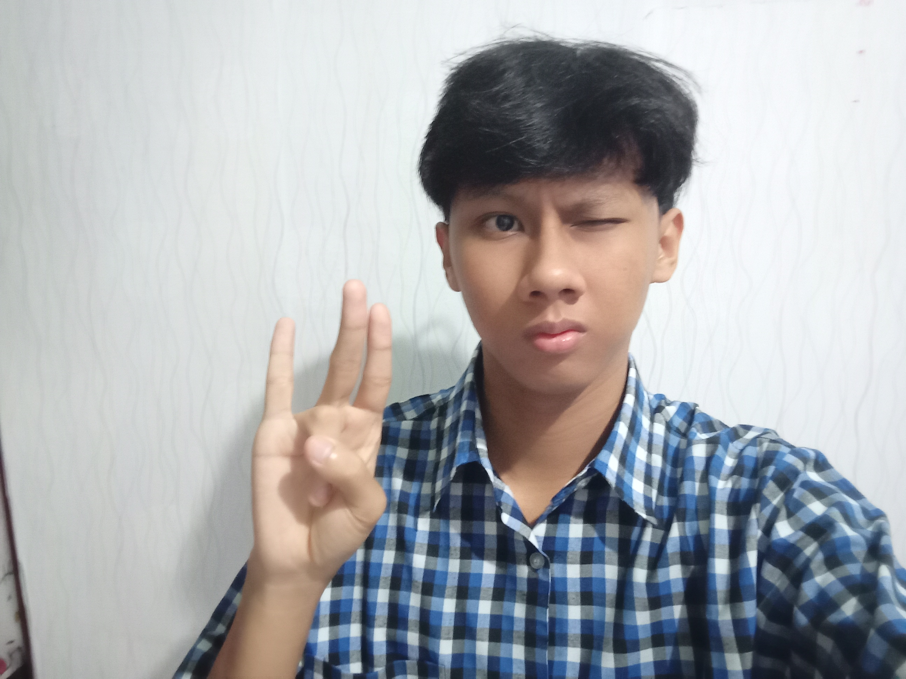
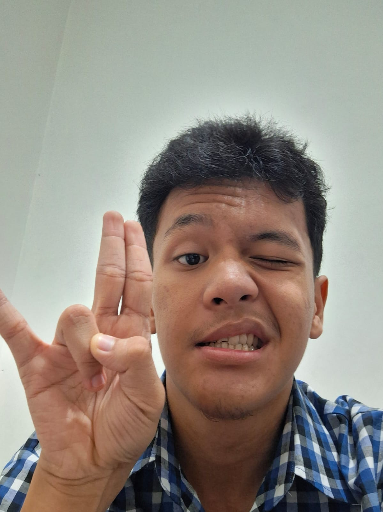

Satria
Halo namaku Gregorius Satria Adiputra. Saya biasa dipanggil Satria. Saya lahir di Yogyakarta, 17 April 2010. Saya saat ini bersekolah di SMA Stella Duce 2 Yogyakarta. Saya memiliki hobi bermain futsal dan mendengarkan musik. Saya memiliki satu band favorit yaitu LANY.
Lagu Favorit
LANY - Stuck

Radit
Halo namaku Radithya Ganendra Wirasena biasa dipanggil Radit. Aku lahir di Tangerang 19 Desember 2009. Saat ini aku bersekolah di SMA Stella Duce 2 Yogyakarta. Hobiku adalah bermain basket, bermain alat musik gitar dan mendengarkan musik.
Lagu Favorit
Rex Orange County - Pluto Projector